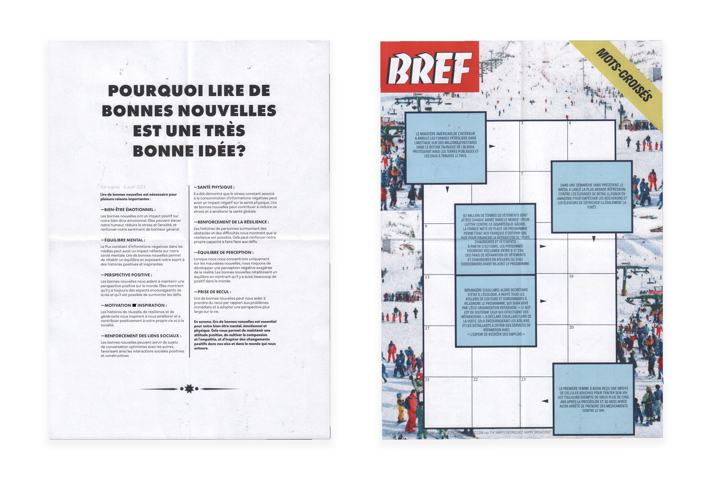
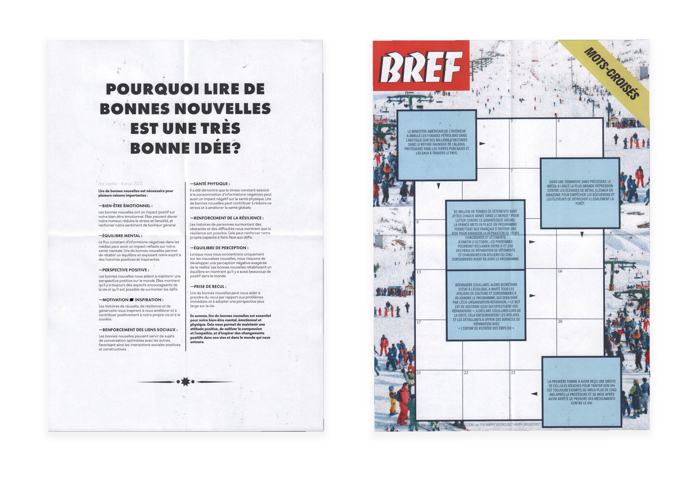

Le verre à moitié plein
Création d’un journal pour le média positif ayant pour but de donner un nouveau regard sur l’actualité en alternative à toutes les informations négatives qui nous polluent. S’il s’avère que le contentement est la clé de la positivité, on s’amuse dans ce journal du bonheur encore innocemment attendu dans la consommation. On trouve le simple plaisir des bonnes nouvelles, face à la société de consommation qui nous distrait.

 
